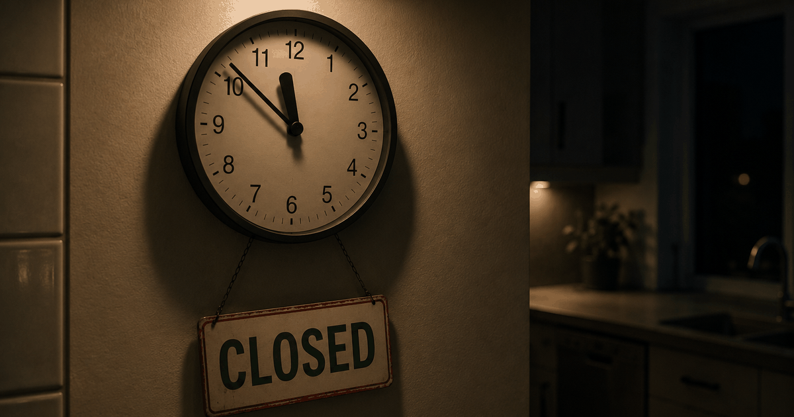

 VN
VNA note from Vadim — The worst fights of my marriage all happened after 11 p.m., both of us empty, over things that didn't deserve a fight. This is what I wish someone had told me before those nights. Why trust us.
If you keep having the same tense, going-nowhere conversations since the baby, the problem usually isn't love — it's that exhaustion has quietly rewired how you two talk. A 2026 study of 4,108 parents found the post-baby drop in relationship satisfaction is driven mostly by more negative exchanges and fewer warm ones, not the baby itself (Pollmann-Schult, Journal of Marriage and Family). The fix isn't one big talk — it's changing the shape of a few daily exchanges.
It's 11 p.m. The baby's finally down. You've got maybe twenty minutes before one of you falls asleep mid-sentence, and you think: now's my chance, we should talk.
Ten minutes later you're both hurt, nothing's resolved, and you're lying back-to-back wondering when talking to the person you love got this hard.
I've been on both ends of that. Here's the part that actually helped me: you're not bad at communicating. You're trying to communicate at the exact moment you're worst equipped for it — and there's now research that shows what's really going wrong.
What actually breaks down (it's not the love)
After a baby, couples don't usually stop loving each other — they start running a worse conversational pattern: sharper exchanges, fewer warm ones. In a 2026 analysis of 4,108 parents, that shift in how couples interacted — more conflict, less appreciation and intimacy — was the main engine behind falling satisfaction, more than the baby or the workload itself (Pollmann-Schult, 2026).
Read that again, because it's oddly hopeful. The thing dragging you down isn't a broken marriage or a mismatch you missed. It's a pattern — and patterns can be changed without a single dramatic conversation.
parents tracked in a nationally representative panel: the decline in relationship satisfaction after a baby ran mainly through increases in negative couple behaviors and drops in positive ones — the how, not the what.
Why exhaustion makes you talk worse
When you're both depleted, your tolerance for friction collapses — small irritations feel huge, and neutral comments get heard as attacks. Researchers studying couples across the transition to parenthood found that uncertainty and running-on-empty make people appraise minor irritations as bigger threats and communicate more defensively during conflict (Theiss and colleagues, 2025). It's not that you got worse at love; your nervous system got louder.
Sleep debt narrows everyone. The generous read — "she's tired, not attacking me" — takes bandwidth you don't have at midnight. So "did you call the pediatrician?" lands like "you failed again," and you're off.
During the transition to parenthood, relational uncertainty and exhaustion lead partners to appraise small irritations more severely and to communicate in more turbulent ways.After Theiss et al., 2025 (relational turbulence during the transition to parenthood)
This is different from the deeper ache of feeling lonely as a new dad — that's about not feeling seen. This is narrower and more mechanical: two good people talking badly because they're both empty. The good news is the mechanical stuff is the easiest to fix.
What doesn't work (and why)
The moves that backfire are the midnight "we need to talk," the backlog dump, the hint you hope she'll decode, and keeping score. They all raise the threat level at the worst possible time. Almost every failed conversation in the newborn year starts harsh, starts late, or carries too much at once.
"We need to talk" puts her on guard before you've said anything. The backlog dump — five grievances in one go — turns a request into a trial. Hints ask an exhausted person to do detective work she has no energy for. And scorekeeping ("I did bedtime three nights running") turns your teammate into your opponent.
None of these mean you're bad at this. They're just what tired brains reach for. The fixes are almost embarrassingly small.
| Instead of | Try |
|---|---|
| "We need to talk." (at 11 p.m.) | "Can we take ten minutes tomorrow after she's down?" |
| "You never help with the nights." | "Can you take the 2 a.m. feed on weekends?" |
| Dropping a hint and waiting | One clear, specific ask |
| Keeping score out loud | "I'm running low — can we rebalance this week?" |
How to actually talk better tonight
Change five things: pick a calmer moment than midnight, bring one topic, start soft, swap the complaint for a specific request, and repair fast when it tips. Drs. John and Julie Gottman's research found the way a conversation opens predicts how it ends — a harsh startup almost guarantees a bad landing — so the single biggest lever is how you begin.
- Pick the moment, not the midnight. Don't launch hard talks when you're both depleted. Name a calmer window. A rested brain hears you; an exhausted one hears an attack.
- One topic, not the whole ledger. Bring one thing. Piling on turns a request into a case for the prosecution.
- Start soft. Open with how you feel and what you need, not what she did wrong. "I've been feeling far from you and I miss us" opens a door; "you never…" builds a wall.
- Swap the complaint for a specific request. "You don't help enough" wounds; "can you take the 2 a.m. feed on weekends?" is something she can actually say yes to.
- Repair fast when it tips. "That came out wrong — can I try again?" The couples who last aren't the ones who never snap; they're the ones who circle back quickly.
Here's the honest barrier. Reading these steps at 11 p.m. is easy; running them in the moment, through your own fog while she's in hers, is nearly impossible — because the exact tools you need (patience, a soft opening, catching your own tone) are the first things exhaustion takes. That's the gap where a neutral, in-the-moment nudge earns its keep. If the deeper issue is that the closeness itself has gone quiet, that's a different conversation worth having too.
Frequently asked questions
Why do my partner and I communicate so badly since the baby?
Because exhaustion, not a lack of love, has rewired how you talk. A 2026 study of 4,108 parents found the drop in relationship satisfaction after a baby is driven mainly by more negative exchanges and fewer positive ones — conflict up, warmth down (Pollmann-Schult, 2026). When you're both running on empty, small irritations feel enormous and neutral comments land as criticism. The pattern is fixable by changing a few daily exchanges.
How can we communicate better when we're both exhausted?
Pick a calmer moment than 11 p.m., bring one topic instead of the whole backlog, start soft (how you feel and what you need, not what she did wrong), swap the complaint for one specific request, and repair fast when it tips. Small, specific, and low-stakes beats one big emotional talk when neither of you has bandwidth.
What is a 'soft startup' and does it really work?
A soft startup means opening a hard conversation gently — with your feelings and a need — rather than with blame or criticism. Drs. John and Julie Gottman's research found that how a conversation begins predicts how it ends: a harsh startup almost guarantees a bad outcome. Starting soft is one of the highest-leverage changes exhausted couples can make.
Should we schedule time to talk or just let it happen naturally?
In the newborn year, schedule it. 'Naturally' rarely arrives when you're both depleted, so the important conversations get postponed until they explode. A short, regular check-in — even ten minutes — beats waiting for a calm evening that never comes.
Is bad communication after a baby a sign we're heading for a breakup?
Usually not. A decline in how couples talk is one of the most common and well-documented effects of new parenthood, and roughly 67% of couples report lower satisfaction in the first three years after a first child (Shapiro, Gottman & Carrere, 2000). What matters is the pattern: couples who make small repairs and keep some warmth flowing recover; those who let the negative exchanges harden drift further.
Keep readingLonely as a new dad? Why it happens and what helps · How to reconnect with your wife after a baby · How relationships actually work after a baby
Contributing editor at Regular, and a dad himself. Writes the honest, from-a-dad's-side pieces on closeness, conflict and the messy first year.
About Regular — the relationship app for new dads, built by a small team of parents who needed it themselves. Small, science-backed moves with your partner, not big talks.